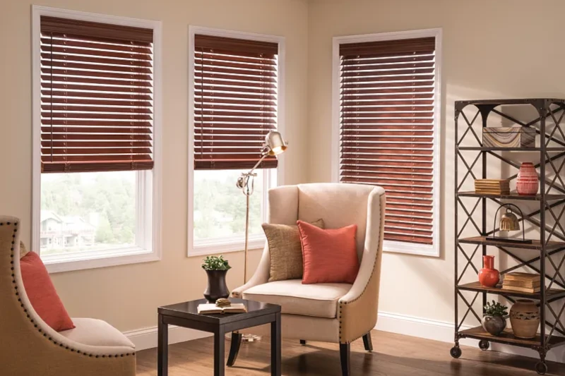

Discover the Perfect Blinds for Your Edmond & Oklahoma City Home
When it comes to window treatments, blinds offer a fantastic blend of light control, privacy, and style. At Shaded in the Sun, we're proud to offer the exceptional quality and design of Graber Blinds. Let's explore the different types of Window Blinds we can help you choose for your Oklahoma City home, ensuring the perfect look and functionality for every room.
Call Brent & Edna today at 405-259-5599
for your window treatment questions.
The Timeless Appeal of Window Blinds

For those who appreciate the natural beauty and inherent warmth of real wood, Real Wood Blinds are an exquisite choice. Crafted from responsibly-sourced hardwoods, these blinds bring a touch of classic elegance to any room. The rich textures and grains of the wood add a layer of sophistication and create a cozy, inviting atmosphere in living rooms, dining rooms, and bedrooms. Beyond their aesthetic appeal, Graber Wood Blinds also offer a degree of insulation, helping to keep your home comfortable throughout the changing Oklahoma seasons.
The Smart and Stylish Solution: Graber Composite & Faux Wood Blinds 
In areas of your home that experience higher levels of humidity, such as kitchens, bathrooms, and laundry rooms, Composite and Faux Wood Blinds offer the perfect blend of style and practicality. Engineered to withstand moisture, these durable alternatives to real wood resist warping, fading, cracking, and peeling. This makes them a smart investment that will maintain their beauty for years to come. Graber Faux Wood Blinds are available in solid colors or with patterns that closely mimic the grain of real wood, allowing you to achieve the desired aesthetic without compromising on durability. Graber also offers Composite Wood Blinds, which are lighter in weight and feature wider ladder spacing. Notably, the color palette of Graber Composite Blinds coordinates with Graber Composite Shutters, offering a cohesive whole-home window treatment solution.
Versatile Functionality with Vertical Blinds

For expansive windows and sliding glass doors, Graber Vertical Blinds provide a functional and stylish window covering solution. Their vertical slats rotate effortlessly to control the amount of light entering your space and can be easily drawn aside for full access or unobstructed views. Graber offers vertical blinds in a variety of materials, including easy-to-clean vinyl for high-traffic areas and softer fabrics in a wide array of colors and patterns to perfectly complement your interior design.
The Sleek and Durable Choice:
Horizontal Aluminum Blinds

For a modern and durable option, consider Graber Aluminum Blinds. These blinds are known for their sleek appearance and resistance to dust, stains, and scratches, making them a practical choice for a variety of rooms. Their easy-to-clean nature makes them particularly suitable for kitchens and bathrooms, offering a clean and contemporary look.
Affordable and Practical: Vinyl Blinds
Graber Vinyl Blinds offer an affordable and practical window covering solution. They are easy to clean and provide good light control and privacy, making them a versatile option for many areas of your home. Available in a range of colors, Vinyl Blinds can be a budget-friendly way to enhance the functionality and look of your windows.
Find Your Ideal Graber Blinds at
Shaded in the Sun
At Shaded in the Sun we are dedicated to providing Oklahoma City area residents with the highest quality window treatments. As a dealer of Graber Blinds, our experienced team can help you navigate the extensive selection and choose the perfect blinds to meet your specific needs and style preferences. From the natural beauty of wood to the enduring durability of composites and the practical functionality of aluminum options, Graber has a solution for every window in your home. Contact us today at 405-259-5599 for a personalized consultation and experience the difference that quality Graber Blinds can make!